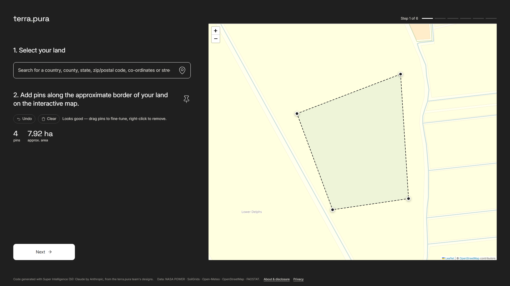
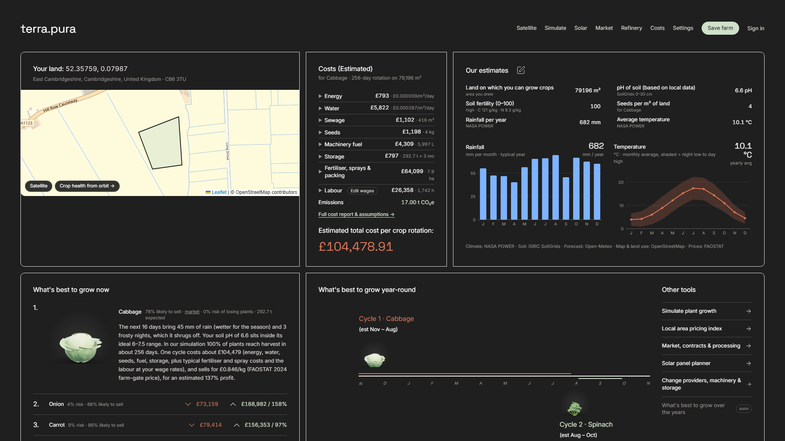
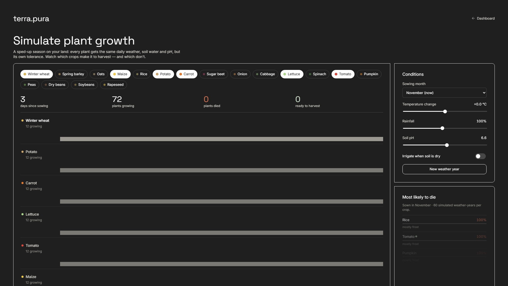
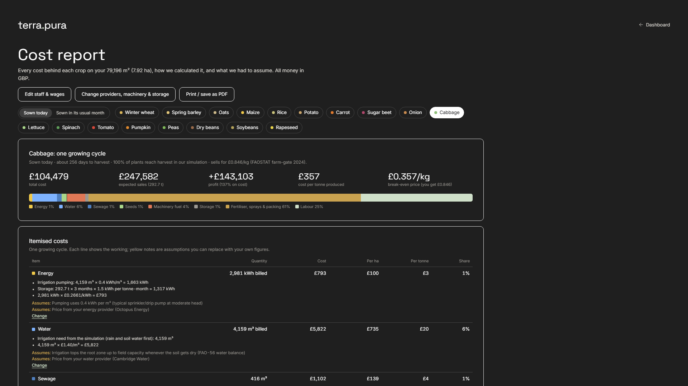
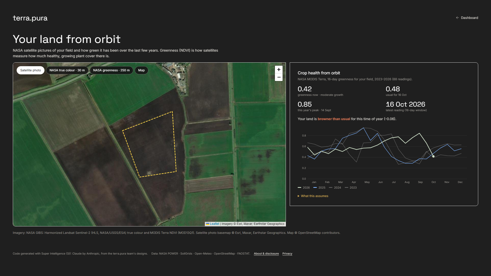

terra.pura
Re-imagining how you see agriculture.
Free crop planning for independent farmers, built on NASA Earth data. Draw your field and see what's worth growing, what it costs, and what could go wrong.
Free crop planning for independent farmers, built on NASA Earth data. Draw your field and see what's worth growing, what it costs, and what could go wrong.
The modern agriculture industry was designed for major companies focused on dominating the market. Independent farmers have been left behind: as climate change reshapes every season, they have very little technology to rely on, and what exists is often locked behind a paywall, scattered across separate tools, or hard to understand.
Free to use at terrapura.sorila.dev and open source on our GitHub under AGPL-3.0, so anyone can tailor it or run it on their own hardware with one command, still completely free.
We take reliable APIs trusted by millions and compile them into one simple dashboard that connects research, surveys, real-time conditions and up-to-date costs, so farmers see what's best to do now and have the depth to plan for the years ahead.
Pick any step to show its screenshot. They also change on their own every few seconds.




Satellite and climate data that used to need a GIS specialist, turned into one plain answer for one field, including how healthy your land is, measured from orbit.

National demand and supply, and your odds of a supermarket contract near you.
Is a small flour mill or oil press worth it? Payback, profit and every cost.
Savings over 25 years against the crop sales you'd lose under panels.
Fuel costs and CO₂ from the tractors and machines you actually own.
Plus energy suppliers in 70 countries: your real providers, with published prices where they exist.
Your farm stays in your own browser. Run it on your own computer with one command.
Independent and smallholder farmers anywhere, for free, in their own currency, with their own local providers and wages.
Costs and yields are model estimates, not guarantees; every assumption is shown and editable. 250 m satellite pixels blur small fields, and prices are yearly averages.
Validate the model on real farms, add more processing options and crops, and bring it offline and into more languages.